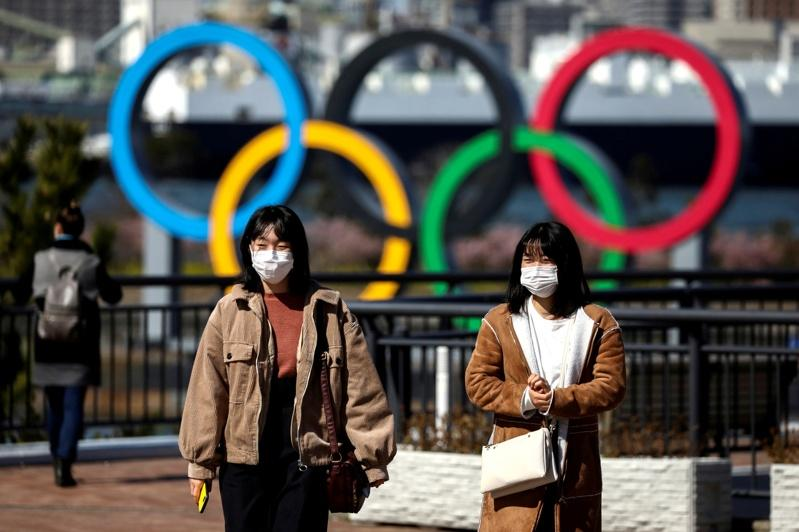

巴黎奥运传出没冷气、伙食缺肉、女选手房间没窗帘，甚至还有选手婚戒被偷，各国怨声载道，不禁想起上届奥运主办国日本的好，国际奥会（IOC）高层也对日媒表示，期待再来日本办奥运，不过日本网友却吓得直喊，「别来了」。
共同社、日刊体育报导，巴黎奥运期间，国际奥林匹克委员会首席执行官杜比（Christophe Dubi）3日在日本奥委会（JOC）举办的日本媒体恳谈会上，表达希望在日本再办奥运的期望。
杜比承认，在COVID-19影响下强行举办东京奥运，以及后来的渎职、围标案影响，「奥运在日本丧失了一部分支持，对此感到理解」。
但他表示，这次巴黎奥运，日本仍有大量观众观看直播，「相信在不远的将来，将会迎来日本再次成为东道国的时候」。
报导一出在网络上引起热烈讨论，立刻有大批日本网友出言反对。
有网友说，「绝对拒绝！」。还有人说，「在很远的地方通过电视或网络观看奥运就可以了」、「我们已经明白奥运是用来看的，不是用来办的」、「日本不是国际奥会的钱包，也不是国际奥会官员的观光胜地」。
也有网友说，「No, thank you，我们要把机会留给其他国家」、「他们这么说，是因为申办的国家变少了吧，为什么不干脆固定在希腊雅典举办呢，这不是奥运的发源地吗」。
实际上，北海道札幌市原本计划申办2030年冬季奥运，继1972年首次举办后再办冬奥，但受到东京奥运弊案影响，已在去年12月放弃申办。